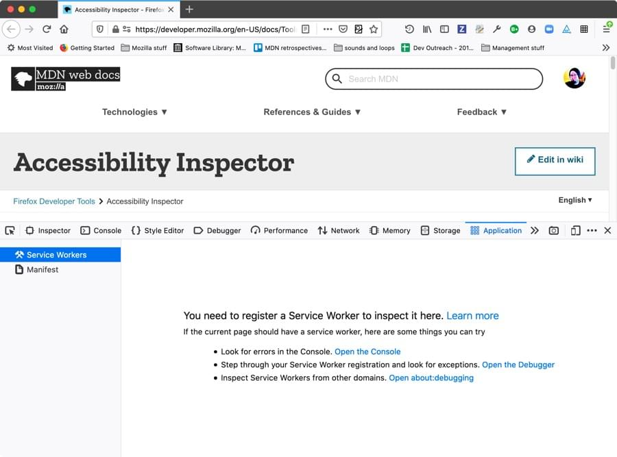
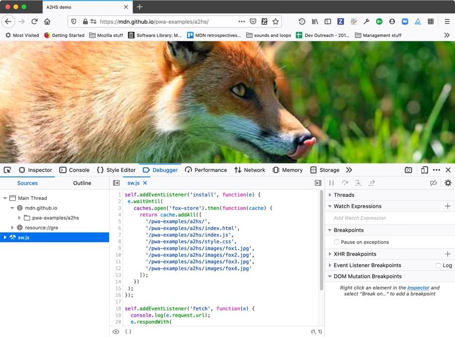
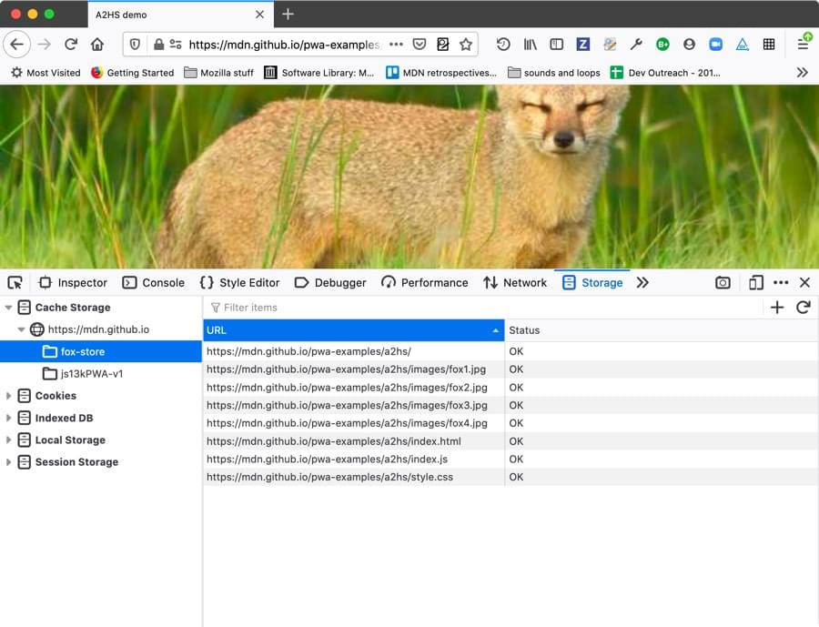
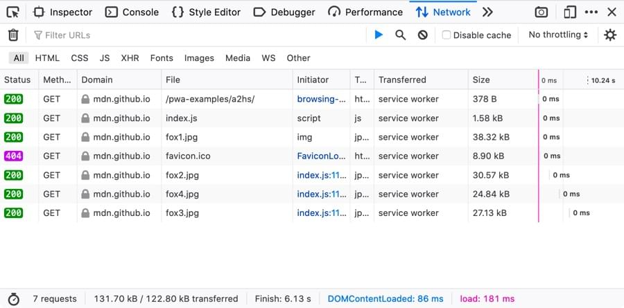

In this article we will look at debugging service workers using the Firefox DevTools Application Panel.
When you open the Application panel’s Service Workers view on a page that doesn't have a service worker registered, you'll get the following output shown:

This gives you some advice on what to do if you don't have a service worker registered, and were perhaps expecting there to be one registered! Let's start by troubleshooting this.
Before you can look at your service worker in action in the Applications panel, you need to successfully register it. Registration is done with a block of code along these lines, using the register() method:
if('serviceWorker' in navigator) {
navigator.serviceWorker
.register('sw.js')
.then(function() { console.log('Service Worker Registered'); });
}
If you get the path wrong, for example, you'll get an error in the Web Console giving you a hint as to what's wrong, which depends on what exactly is wrong with the code. If this is not enough to help you figure out the problem, you could also try going to the JavaScript Debugger and stepping through your code to pinpoint exactly where it is going wrong.
In any case, when the service worker is successfully registered, you'll see information about it displayed in the Application > Service Workers view (along with any other service workers registered on the same domain):
This gives you a variety of information about your service worker:
There are a couple of other useful controls on this view, too.
On the right-hand side of the Service Workers view there is an Unregister button, which when pressed unregisters the service worker. This is very useful because, once registered, the service worker will not necessarily update to the new version immediately, which can make debugging a pain. From Updating your service worker:
If your service worker has previously been installed, but then a new version of the worker is available on refresh or page load, the new version is installed in the background, but not yet activated. It is only activated when there are no longer any pages loaded that are still using the old service worker. As soon as there are no more such pages still loaded, the new service worker activates.
Important: The Debug button is currently enabled only in Firefox Nightly.
When your service worker is running, a Debug button is available next to the Source information (it is disabled when the service worker is stopped). When pressed, this takes you straight to the JavaScript debugger view of your service worker code, and you can use the full power of the debugger to debug it — stepping through code, etc.

If you are using your service worker to store your site assets in Cache Storage (using the Cache API), which is essential for creating offline apps, it can be annoying to test the cache. When you fill up the cache with assets, but then want to alter the behavior slightly, you previously had to manually write code to empty the cache, and then fill it again.
The Firefox DevTools’ Storage tab has a Cache Storage section that lists all the different Caches you have stored under each different origin.

Right/Ctrl clicking on one of the caches gives you two options:
You can also click on one of the individual items stored in the cache, then Right/Ctrl click on it to get options for deleting just that item, or every item in the cache.
These options make it much easier to remove a cache if it is required for testing a code update.
It is also worth knowing that if you are testing an app's offline capabilities, you'll be able to see whether requests are being retrieved from a service worker-initiated cache rather than from the network by looking at Network Monitor.

Resources retrieved from the cache are indicated with service worker in the Transferred column.
Note: There is currently a bug whereby the Network Monitor cannot show network requests from a service worker running in a different process to the application ({{bug(1432311)}}).
As mentioned above, the Service Worker view of the Application panel shows all the service workers registered on the current domain. If you want to see a list of information concerning all the service workers registered on your browser, you can visit about:debugging#/runtime/this-firefox. Below the list of installed extensions you'll find a list of all the service workers you have registered.